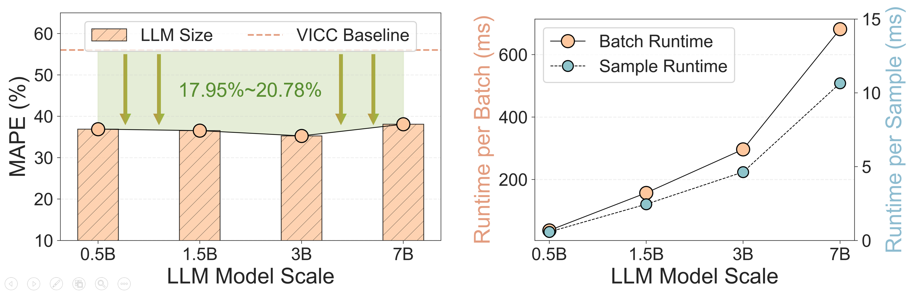
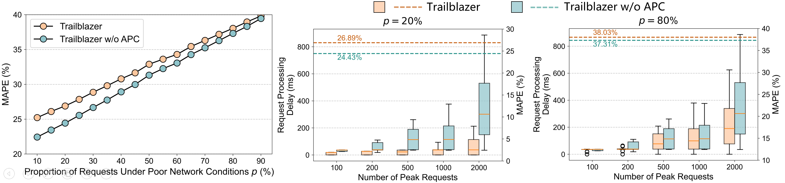

Key Innovation
Trailblazer (开拓者) represents a generalist-driven paradigm which leverages Large Language Models as generalist policies to achieve unprecedented generalization across diverse network tasks and environments.

Abstract
Designing control policies to ensure robust network services is essential to modern digital infrastructure. However, the dominant paradigm for network optimization relies on designing specialist policies based on handcrafted rules or deep learning models, leading to poor generalization across diverse tasks and environments. In contrast, large language models (LLMs), pretrained on Internet-scale corpora, provide a rich and unified knowledge base that encodes fundamental networking principles. Combined with their emergent abilities in generalization to unseen scenarios, LLMs offer a transformative foundation for generalist network policies that can generalize across diverse tasks and environments with minimal adaptation.
In this paper, we present Trailblazer, the first systematic framework to realize such a generalist policy for networking. Trailblazer incorporates a network alignment scheme to ground the LLM in specific networking tasks, and an adaptive policy collaboration mechanism that offloads simple control cases from the LLM to a lightweight policy for computational efficiency. Through extensive simulations and large-scale real-world online evaluation on Douyin (the Chinese version of TikTok), Trailblazer, powered by a single LLM, demonstrates stronger cross-task and cross-environment generalization than conventional specialist policies. Our results validate LLMs as the foundation for generalist network policies, and position Trailblazer as the first step toward the generalist-driven paradigm that enables strong generalization with minimal efforts in policy design.
Methodology
Overview of our proposed framework Trailblazer.
NIOKA: Align LLMs to Networking
The Network Input-Output Knowledge Alignment scheme (NIOKA) bridges the gap between LLMs and networking tasks through three key modules:
- Network State Encoder: Project non-textual network information into the same feature space as language tokens
- Network Action Decoder: Map LLM output feature vectors into executable network control actions
- Offline Reinforcement Fine-tuning: Fine-tune the LLM to acquire domain knowledge using offline experience datasets collected from conventional policies across diverse environments
APC: Improve LLM Inference Efficiency
The Adaptive Policy Collaboration mechanism (APC) reduce unnecessary LLM computation to improve system efficiency through two key components:
- Request Scheduler: Evaluate network conditions for each incomming request (latency, bandwidth, etc.), selectively route those difficult cases to the LLM for intelligent control, and leave the rest for a simple policy for fast processing.
- Conventional Policy: Handle the simple cases offloaded from the LLM.
Experimental Results
We evaluate our generalist approach Trailblazer, powered by a single LLM, against task-specific policies on across heterogeneous tasks and environments.
(ABR=Adaptive Bitrate Streaming; CJS=Cluster Job Scheduling; CC=Congestion Control)
Cross-task generalization performance comparison between Trailblazer and specialist policies.
Conventional specialist policies fail to generalize across different tasks due to task-specific design. In contrast, powered by a single LLM, Trailblazer successfully generalizes across heterogeneous networking tasks, achieving superior cross-task generalization.
These results demonstrate that LLMs can serve as a unified foundation for generalist network policies, breaking the task-isolation barrier of the specialist paradigm.
Cross-environment generalization evaluation under out-of-distribution (OOD) test conditions.
Trailblazer consistently outperforms all specialist baselines in terms of average values and distributions across all challenging out-of-distribution environments.
This underscores a key strength of the generalist paradigm: by leveraging the strong generalization capabilities of LLMs, it generalizes across heterogeneous environments, where specialist approaches often fail.
Large-scale online A/B test results in Douyin's production environment.
We deploy Trailblazer in Douyin's real-time congestion control (CC) service for large-scale online A/B tests over three weeks, serving 150,000+ users across 100+ cities and accumulating over 1,200 days of video playback time. Results show that Trailblazer outperforms VICC, a highly optimized policy designed for Douyin, in key industrial performance metrics.
These results provide strong empirical validation: Trailblazer, as an LLM-based generalist approach, can not only operate reliably in production network environments but also introduce industrial improvements in service quality.
Key Insights
Insight 1: Early Saturation
Unlike scaling laws in NLP, small-scale LLMs can achieve strong generalization in networking. This enables efficient deployment by trading model size for computational efficiency without sacrificing performance.
Insight 2: Selective Invocation
Selectively invoking the LLM can boost efficiency without compromising performance. This reveals an important principle: invoke the LLM for network control when necessary rather than implementing per-request control.
Citation
Please cite our work if you find it useful for your research: